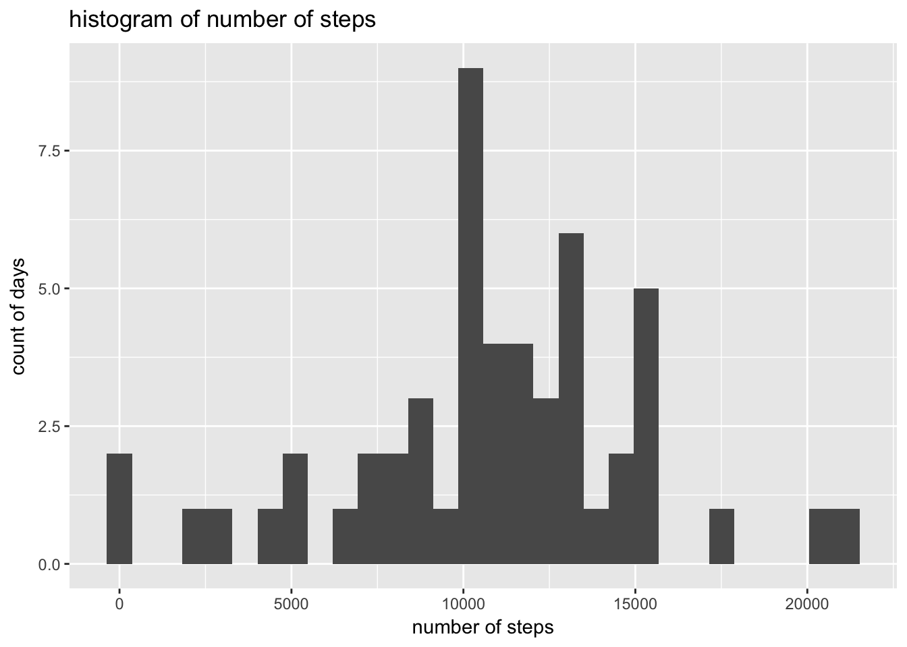
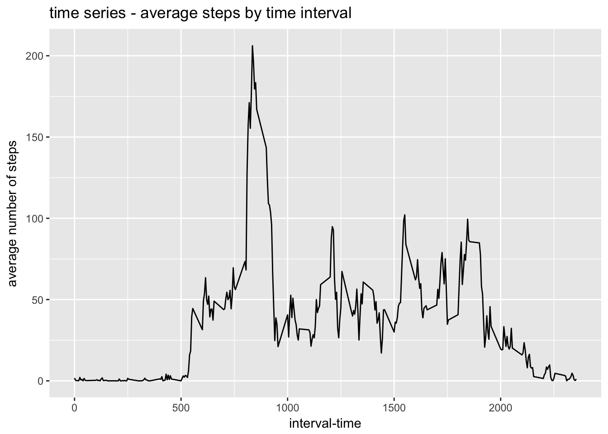
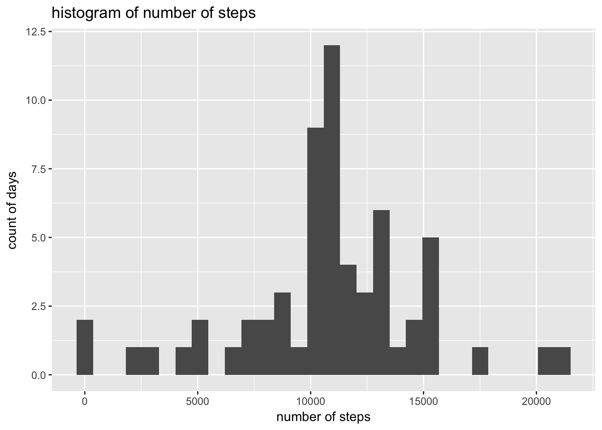
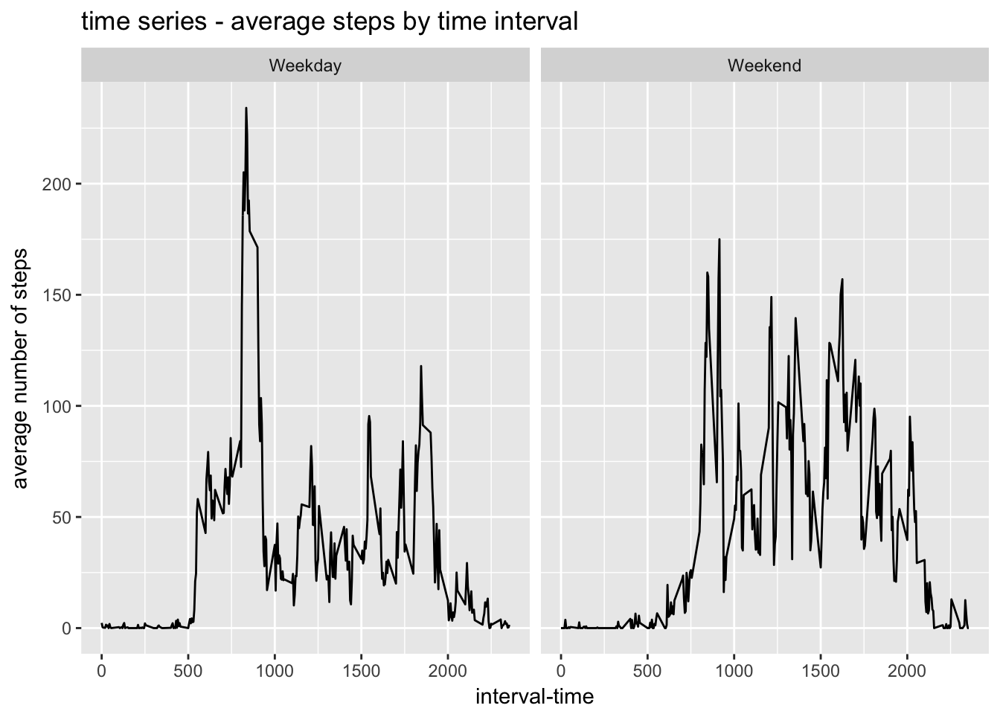

file <- "./activity.csv"
data <- read.csv(file)
data$date <- as.Date(as.character(data$date))dailystep <- aggregate(steps~date,data=data,sum)
dailyplot <- ggplot(data=dailystep,aes(x=steps)) +
geom_histogram()+
xlab("number of steps")+
ylab("count of days")+
ggtitle("histogram of number of steps")
dailyplot## `stat_bin()` using `bins = 30`. Pick better value with `binwidth`.
mean(dailystep$steps)## [1] 10766.19median(dailystep$steps)## [1] 10765diurnalstep <- aggregate(steps~interval,data=data,mean)
diurnalplot <- ggplot(data=diurnalstep,aes(x=interval,y=steps))+
geom_line()+
xlab("interval-time")+
ylab("average number of steps")+
ggtitle("time series - average steps by time interval")
diurnalplot
print("Interval with highest number of steps")## [1] "Interval with highest number of steps"diurnalstep[which.max(diurnalstep$steps),]## interval steps
## 104 835 206.1698missing <- is.na(data$steps) # Vector containing the indices of cases missing steps
imputed <- data # Create a copy of the data set
imputed$steps[missing] <- diurnalstep[match(imputed$interval[missing],diurnalstep$interval),2]
# At each case with missing value, impute the value from the matching time of day
dailystep.imp <- aggregate(steps~date,data=imputed, sum)
dailyplot.imp <- ggplot(data=dailystep.imp,aes(x=steps)) +
geom_histogram()+
xlab("number of steps")+
ylab("count of days")+
ggtitle("histogram of number of steps")
dailyplot.imp## `stat_bin()` using `bins = 30`. Pick better value with `binwidth`.
mean(dailystep.imp$steps)## [1] 10766.19median(dailystep.imp$steps)## [1] 10766.19# Test if the mean with imputed values is greater than the mean of observed values
mean(dailystep.imp$steps) > mean(dailystep$steps)## [1] FALSE# Test if the median with imputed values is greater than the median of observed values
median(dailystep.imp$steps) > median(dailystep$steps)## [1] TRUEdata$weekend <- as.factor(ifelse(weekdays(data$date) %in% c("Saturday","Sunday"),"Weekend","Weekday"))
diurnalstep.wk <- aggregate(steps~interval+weekend,data=data,mean)
diurnalplot.wk <- ggplot(data=diurnalstep.wk,aes(x=interval,y=steps))+
geom_line()+
xlab("interval-time")+
ylab("average number of steps")+
ggtitle("time series - average steps by time interval")+
facet_grid(.~weekend)
diurnalplot.wk